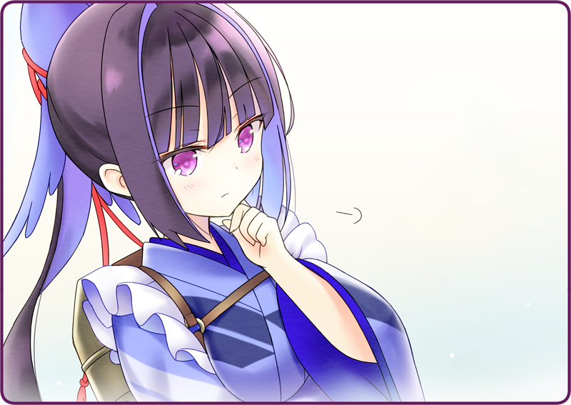

厨房にやってきた灰桜。
しゅんとなって申し訳なさそうにしている。
「いや、ボクがちゃんと説明していなかったのが悪かったんだよ」
調理台の上にはバット。
しっとりと濡れた、桜の葉と花房が並べられている。
「うん、一昨日から塩漬けにしておいたんだ。こうすれば毒もなく食べられるし……」
顔を近づけて、爽やかな香りを嗅ぐ。
「ほら、春の匂いがするだろ？」
「こうやって紅茶にいれてもおいしいし、お菓子を作っても……」
紅茶を試しに入れて、桜ティーを作る。
そうやって盛り上がっていると、鴉羽さんがやってきた。
お盆を手にとって、すごすごと厨房を出て行く。
「あの、すみません、余計なことしたみたいで……」

鴉羽さんは腕を組んだまま、じっと押し黙っている。
なんだか考え込んでいる様子だ。
「違うんです、少しでも新しい名物になればと……話題になれば、お客さんも増えるかもしれないですし。黒猫亭はみんな一生懸命だし、雰囲気もいいし……もっと流行ってもいいと思ったんです」
じっとボクの言葉に耳を傾けている。
そして、小さく長い息を吐いた。
「は、はい……」
もっと怒られると思ったので、意外だ。
取りあえず、桜の塩漬けが乗ったバットは冷蔵庫に戻しておく。
鴉羽さんも仕事に戻って、カトラリーをナプキンで磨いている。
不意に声が上がる。
それはボクに対する質問と言うよりも、ふと浮かんだ疑問といった雰囲気だった。
「流行りますよ、絶対！」
「
自律人形が戦争で使われていたのは事実ですけど……」
「ですけど、黒猫亭のみんなは違います！」
強く主張する。
それは、彼女たちに接してきた上での本心だった。
「だから、いろんなメニューを展開して、お店も広くして……そうだ、あのピアノも活用しましょう。ピアニストを呼んで弾いて貰うとか……あっ、そうか。いっそ伴奏に合わせて歌えばいいんです。六区でも少女歌劇が再開したようですし、自律人形が歌えば話題になりますよ。みんな聞きたいと思うんです」
にっこりと鴉羽さんは微笑む。
なんだか、懐かしさを感じているように。
「いい、というと……」
「灰桜のことですか？」
磨いていたフォークを、そっとバスケットに収めている。
「あ……」
すこし哀しそうに、鴉羽さんは微笑む。
「……直るんですか？」
手際よくバスケットを揃えると、丁寧に上から真新しいナプキンをかけている。
一仕事終えたようで、ポニーテールを揺らして厨房を去っていく。
冷めた紅茶の上に、ふわふわと桜が漂っていた。

 「ごめんなさい、わたしの勘違いで……」
「ごめんなさい、わたしの勘違いで……」 「お客様、帰られたわ」
「お客様、帰られたわ」